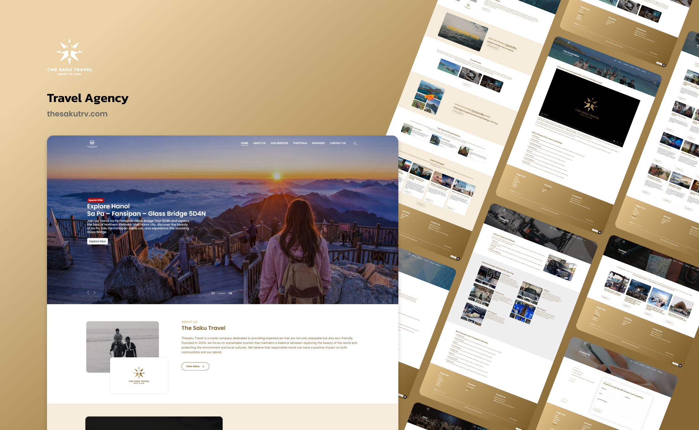

Sektor pariwisata terus mengalami perkembangan pesat seiring dengan tingginya minat masyarakat untuk menjelajahi berbagai destinasi baru. The Saku Travel hadir dengan menawarkan pengalaman pemesanan paket liburan yang eksklusif melalui platform daring yang mengedepankan kualitas visual dan kemudahan informasi.

Pratinjau antarmuka The Saku Travel yang menonjolkan fotografi lanskap destinasi wisata.
Tingginya persaingan pada industri pariwisata daring membuat konsumen menjadi sangat selektif dalam memilih agen perjalanan. Calon wisatawan sering kali merasa ragu untuk melakukan pemesanan akibat banyaknya penipuan berkedok biro wisata wisata murah di media sosial. Ketiadaan platform resmi yang terstruktur dapat menurunkan tingkat kepercayaan pelanggan terhadap kredibilitas sebuah perusahaan.
Selain masalah kepercayaan, calon wisatawan juga kerap kesulitan dalam menemukan informasi yang komprehensif mengenai detail rencana perjalanan. Mereka membutuhkan rincian fasilitas tur, dokumentasi lokasi yang jelas, dan kemudahan akses untuk berkonsultasi dengan agen pelayanan pelanggan secara langsung sebelum mengambil keputusan pembelian.
Platform The Saku Travel dibangun untuk menyelesaikan permasalahan kredibilitas tersebut. Situs web ini merangkum seluruh informasi profil perusahaan dan katalog layanan ke dalam satu etalase digital yang transparan. Kehadiran platform yang dirancang dengan sangat terperinci ini berfungsi untuk meyakinkan calon pelanggan bahwa mereka sedang berhadapan dengan agen perjalanan yang bonafide dan tepercaya.
Perancangan antarmuka pada situs web pariwisata memiliki satu tujuan utama, yaitu membangkitkan minat emosional pengunjung terhadap destinasi wisata. Oleh karena itu, saya mengimplementasikan pendekatan desain yang mengedepankan elemen kemewahan visual.
Palet Warna Premium: Pemilihan warna didominasi oleh perpaduan warna emas dan krem. Kombinasi warna ini secara psikologis mencerminkan kualitas layanan kelas atas, kehangatan pelayanan, serta
memberikan kesan eksklusif pada keseluruhan identitas merek.
Optimalisasi Ruang Visual: Elemen visual utama berfokus pada penyajian fotografi lanskap beresolusi tinggi. Spanduk utama pada halaman depan dirancang secara penuh hingga menyentuh tepi layar
untuk memberikan efek visual yang imersif dan langsung memikat perhatian pengunjung seketika mereka membuka situs web.
Sistem Tata Letak Kartu: Informasi mengenai rencana perjalanan dan detail paket wisata disusun menggunakan tata letak kartu yang rapi. Pendekatan ini mencegah kebingungan informasi sehingga
pengunjung dapat dengan mudah membandingkan setiap fasilitas tur yang ditawarkan.
Situs web promosi pariwisata sangat bergantung pada pameran media visual seperti gambar destinasi dan video perjalanan. Tantangan teknis terbesar dari desain yang kaya akan aset visual adalah menjaga kestabilan kecepatan muat halaman. Waktu muat yang lambat dapat berdampak buruk pada kenyamanan pengguna dan menurunkan peringkat situs web pada mesin pencari.
Pada tahap pengembangan sistem, saya memfokuskan upaya pada pengompresan aset tanpa mengurangi ketajaman visual. Saya menerapkan teknik pemuatan tunda pada seluruh galeri media dan video pameran. Sistem ini menginstruksikan peramban web untuk hanya mengunduh aset ketika pengguna menggulir layar mendekati elemen tersebut.
Selain itu, modul interaksi pelanggan dirancang secara dinamis. Formulir pendaftaran dan pertanyaan dihubungkan langsung ke pangkalan data internal perusahaan. Fitur ini memastikan bahwa tim layanan pelanggan The Saku Travel dapat merespons setiap permintaan penawaran harga dengan cepat dan tepat sasaran.
Kehadiran situs web resmi menepis keraguan calon pelanggan terhadap legitimasi biro perjalanan.
Penyajian dokumentasi destinasi yang optimal berhasil membangkitkan minat berlibur pengunjung.
Fasilitas formulir Contact mempercepat proses konsultasi dan pemesanan layanan pariwisata.
Sebagai konklusi, pengembangan platform The Saku Travel membuktikan pentingnya keselarasan antara daya pikat visual dan keandalan sistem teknis. Platform ini berhasil mentransformasi ketertarikan visual pengunjung menjadi tindakan pemesanan nyata, sekaligus mengukuhkan posisi perusahaan sebagai agen perjalanan yang profesional di tengah persaingan industri pariwisata.